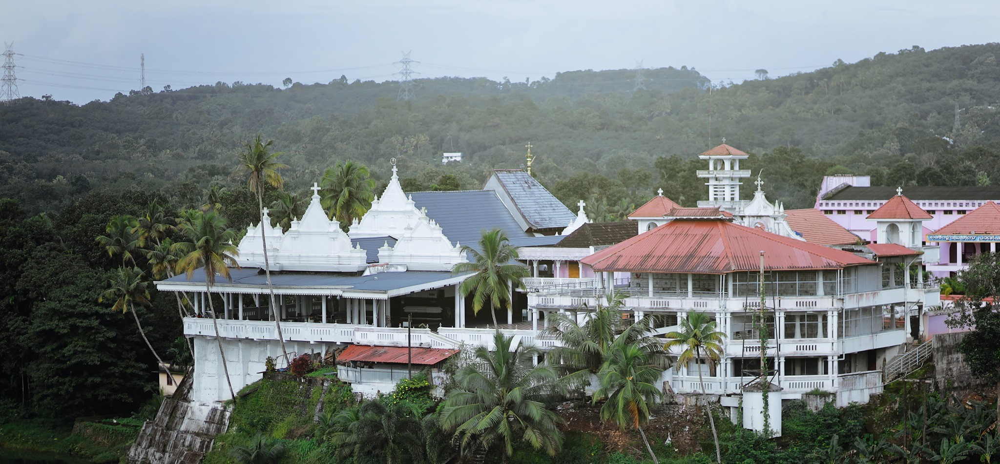
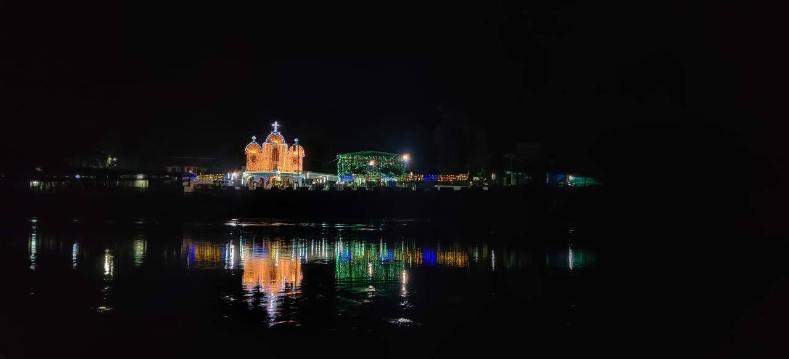
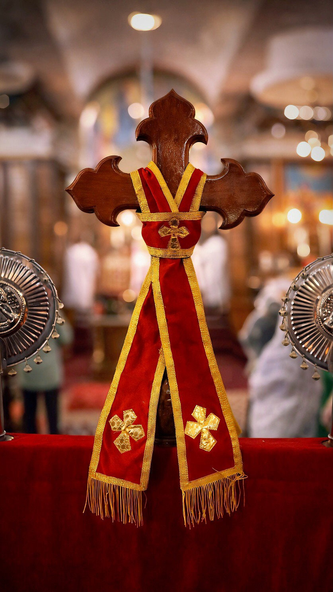

History of Piravom Valiyapalli
V. Madbaha of the ancient Piravam St. Mary's Church, which shines as the light of the entire nation, the Malankara Orthodox Syrian Church... a holy and ancient place blessed with the invisible presence of Mother Mary... the court of kings.❣️
HISTORY
PIRAVOM VALIYA PALLY which is one of the most ancient and prominent church in Kerala stands on a lovely hilltop on the eastern bank of the Muvattupuzha river at Piravom, 35 Kms east of Kochi. Adorned with all the majestic beauty of nature, this Church is believed to be as old as the Christianity. Its lamp, the light of hope, is kept burning perpetually throughout day and night, a peculiar feature! Though the Church is named after St. Mary, it is popularly known as the 'Church of the Kings' (“Rajakkalude Pally”). People from various parts of the country irrespective of caste, creed and religion reach this pilgrim centre for consolation and comfort with offerings to their ‘Kings’ who never refuse the prayers and tears of the devotees. This pilgrim centre stands as a fort of refuge, showering blessings, ecstasy, complacence and solace to millions of people far and near. The church has been invariably known as Piravom Valiyapally, Morth Mariyam Pally, Rajakkalude Pally, St.Mary’s Jacobite Syrian Chathedral etc.. As legends say, it is the first Christian church in the world, and it is the only church in the name of the Holy Kings (MAGI) which stands on the solid rock of Christian faith. It is one among the rare churches in Malankara where there has been daily Holy Mass from very olden times. There is the "Vishudha Moonninmel Qurbono" (The Holy Mass offered jointly by three priests) almost daily and there are two Holy Masses one after the other on Sundays. Pilgrims from far and near come to pray for consolation and comfort. Many parishioners come daily in the afternoon to pray and they light candles in the church and at the tombs of their forefathers in the graveyard, which is another significance of this church among the Churches in Malankara. This church remains loyal to the Patriarch of Antioch, seated on the Holy Apostolic throne of St. Peter.


Old History
About 2000 years ago, "…after the birth of Jesus Christ in Bethlehem of Judaea, in the days of king Herod the "Wisemen" from the east (The Magi) reached Bethlehem through Jerusalem. The "star" they saw in the east was moving to direct them till they reached the birthplace of Infant Jesus… They saw the young child on the lap of mother Mary, knelt down and worshipped him. They opened their treasures and presented gifts to him: Gold, Frankincense, and Myrrh (St. Mathew 2:1-11) And they returned with exceeding joy and satisfaction to their home land in the east. The Wisemen (Holy kings) were scholars, rulers and devotees. The legends name them as Melchior, Gaspar and Balthazar. Old Melchior, middle aged Gaspar and young Belthazar visited Infant Jesus. When they reached back their homeland, they built an edifice in the Indian style and here they began to worship the Holy infant. As such Piravom Valiyapally is the first church in the world, where worshipping Jesus Christ started. During the 5th Century, this building may have been rebuilt as a Christian church as we now see. Evidences are many which goes to prove this traditional faith. The commercial connection of Kerala with the western countries and the astrological competence of Kerala are only some. The westerners were visiting Kerala for the business of spices. The major part of the gift presented by the Holy Kings was spices. The Holy Book says that the wise men came from the East. Aryabhata, Vararuchi and Sankaranarayana are examples for the fact that Kerala has been famous for astronomy since olden times. Widely famous astrological centre, the ‘Pazhoor Padippura’ very near to this church is also an evidence to reach to this conclusion. "The place-name Piravom itself is related to 'piravi' (Birth)". Many people are of such opinions. It is seen in the History of St.Thomas (Page. 15; Suriyani Sabha, Kaniyanparambil Kurian Corepiscopa) that the ‘Megusans’ (MAGI), who made offerings to Infant Jesus had been sanctified as Christians in India by St.Thomas, when he was in missionary works in Kerala. It is believed that, in the beginning, this church building was in the architectural style of Hindu Temples. But later during the flourishing of the Persian culture, the church building was renovated adopting the Persian architecture. The picture of fish, an ancient Christian emblem has a venerable place in the church. The Church was built as a strong fort; having been built in the periods of "Padayottam" (civil wars and banditry) its walls are more than four feet in thickness.

